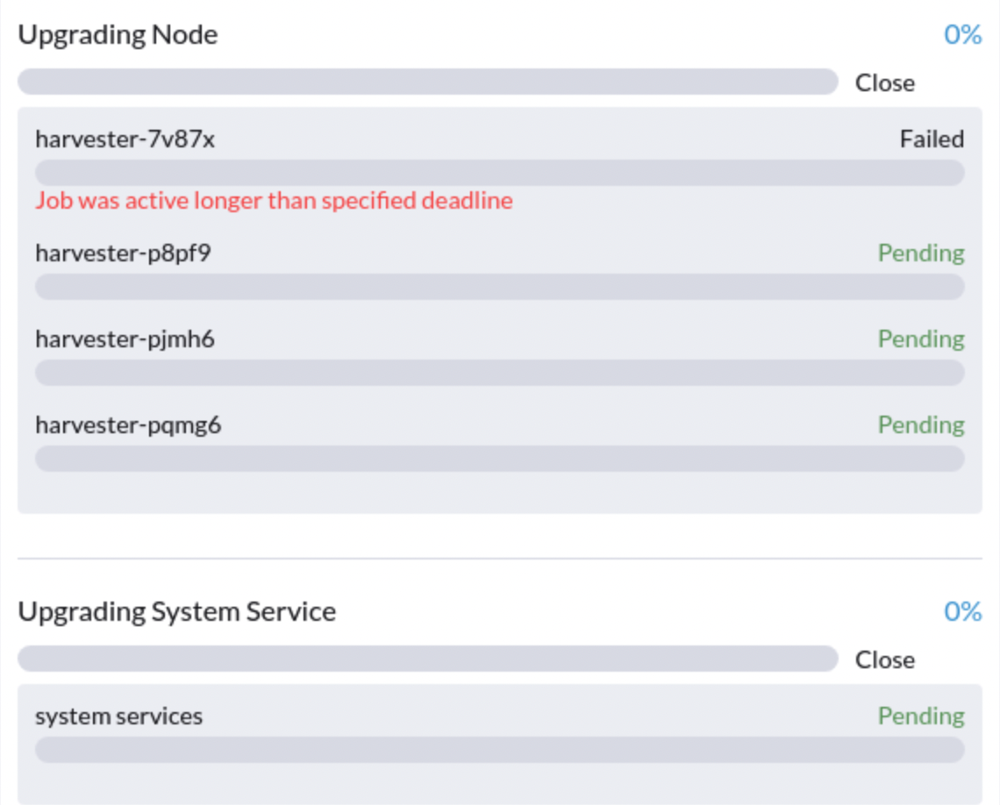

|
この文書は自動機械翻訳技術を使用して翻訳されています。 正確な翻訳を提供するように努めておりますが、翻訳された内容の完全性、正確性、信頼性については一切保証いたしません。 相違がある場合は、元の英語版 英語 が優先され、正式なテキストとなります。 |
v1.1.2 から v1.2.0 へのアップグレード（推奨しません）
|
v1.2.0 で見つかった既知の問題のため： v1.2.0 へのアップグレードは推奨しません。v1.1.x クラスターを v1.2.1 にアップグレードしてください。 |
一般情報
|
アップグレードを開始する前に、クラスターが安定した状態にあることを確認するために、事前チェック用スクリプトを実行できます。詳細については、この URL を訪れてスクリプトをご覧ください。 |
アップグレード可能なバージョンがある場合、Harvester GUI ダッシュボードページにアップグレードボタンが表示されます。詳細については、アップグレードを開始する を参照してください。
エアギャップ環境のアップグレードについては、エアギャップ(された)アップグレードの準備 を参照してください。
当バージョンの注意事項
1.アップグレードを開始できず、"validator.harvesterhci.io" denied the request: managed chart rancher-monitoring is not ready, please wait for it to be ready を報告します。
クラスターが ストレージネットワーク で構成されている場合、次のメッセージでアップグレードを開始できません。

2.アップグレードが Creating Upgrade Repository でスタックしています。
アップグレード中に、アップグレードリポジトリの作成 が 保留中 の状態でスタックしています：

クラスターがこの問題に直面しているか確認するために、次の手順を実行してください：
-
アップグレードリポジトリポッドを確認してください：

virt-launcher-upgrade-repo-hvst-<upgrade-name>ポッドがContainerCreatingに留まっている場合、クラスターはこの問題に直面している可能性があります。この場合は、ステップ 2 に進んでください。 -
Longhorn GUI でアップグレードリポジトリボリュームを確認してください。
-
ボリューム ページに移動します。
-
アップグレードリポジトリ VM ボリュームを確認してください。それは
virt-launcher-upgrade-repo-hvst-<upgrade-name>という名前のポッドに接続されている必要があります。ボリュームのレプリカの1つがStopped（灰色）に留まっている場合、クラスターはこの問題に直面しています。
-
関連する問題：
-
解決策:
-
Longhorn GUI から
Stoppedのレプリカを削除してください。または -
アップグレードを再起動してください。
-
3.ノードのプレドレイン中にアップグレードがスタックしています。
v1.1.0 以降、Harvester はノード数が 3 以上の場合、すべてのボリュームが正常になるのを待ってからノードをアップグレードします。一般的に、アップグレードが「プレドレイン」状態でスタックしている場合、ボリュームの健康状態を確認できます。
埋め込まれたLonghorn GUIにアクセスする方法を確認するには、"埋め込まれたLonghornにアクセス"を訪問してください。
プレドレインジョブのログも確認できます。フェーズ4を参照してください：トラブルシューティングガイドのノードをアップグレードしてください。
4.アップグレードが最初のノードのアップグレード中にスタックしています:ジョブが指定された期限よりも長くアクティブでした。
アップグレードが失敗しました。下のスクリーンショットに示されているように：

5.アップグレードがプレドレイン状態でスタックしています。
アップグレードが「プレドレイン」状態でスタックしているのが見られるかもしれません：

この段階では、Kubernetesはノードのワークロードをドレインすることになっていますが、いくつかの理由でプロセスが停止する可能性があります。
5.1 ノードには、単一レプリカのボリュームにサービスを提供する Longhorn instance-manager-r ポッドが含まれています。
ノードがボリュームの最後の生存レプリカを含む場合、Longhornはノードのドレインを許可しません。ノードがこの状況に直面しているかどうかを確認するには、次の手順に従ってください：
-
次のコマンドで単一レプリカボリュームをリストします：
kubectl get volumes.longhorn.io -A -o yaml | yq '.items[] | select(.spec.numberOfReplicas == 1) | .metadata.namespace + "/" + .metadata.name'
次に例を示します。
$ kubectl get volumes.longhorn.io -A -o yaml | yq '.items[] | select(.spec.numberOfReplicas == 1) | .metadata.namespace + "/" + .metadata.name' longhorn-system/pvc-d1f19bab-200e-483b-b348-c87cfbba85ab
-
レプリカがスタックしたノードに存在するか確認します：
次のコマンドでボリュームのレプリカのNodeIDをリストします：
kubectl get replicas.longhorn.io -n longhorn-system -o yaml | yq '.items[] | select(.metadata.labels.longhornvolume == "<volume>") | .spec.nodeID'
次に例を示します。
$ kubectl get replicas.longhorn.io -n longhorn-system -o yaml | yq '.items[] | select(.metadata.labels.longhornvolume == "pvc-d1f19bab-200e-483b-b348-c87cfbba85ab") | .spec.nodeID' node1
結果がレプリカがアップグレードがスタックしているノード（この例ではnode1）に存在することを示している場合、クラスターはこの問題に直面しています。
この状況に対処する方法はいくつかあります。VMに最も適切な方法を選択してください：
-
単一レプリカボリュームを使用しているVMをシャットダウンしてボリュームを切り離し、アップグレードを続行できるようにします。
-
ボリュームのレプリカを1つ以上に調整します。
-
*ボリューム*ページに移動します。
-
問題のあるボリュームを見つけて右側のアイコンをクリックし、次に*レプリカ数の更新*を選択します：

-
*レプリカの数*を増やし、*OK*を選択します。
5.2 誤設定されたLonghorn instance-manager-r Pod Disruption Budgets (PDB)
誤設定されたPDBがこの問題を引き起こす可能性があります。それが当てはまるか確認するために、以下の手順を実行します：
-
スタックしたノードが`harvester-node-1`であると仮定します。
-
スタックしたノード上の`instance-manager-e`または`instance-manager-r`ポッド名を確認します：
$ kubectl get pods -n longhorn-system --field-selector spec.nodeName=harvester-node-1 | grep instance-manager instance-manager-r-d4ed2788 1/1 Running 0 3d8h
上記の出力は、`instance-manager-r-d4ed2788`ポッドがノード上にあることを示しています。
-
Rancherのログを確認し、`instance-manager-e`または`instance-manager-r`ポッドがドレインできないことを確認してください:
$ kubectl logs deployment/rancher -n cattle-system ... 2023-03-28T17:10:52.199575910Z 2023/03/28 17:10:52 [INFO] [planner] rkecluster fleet-local/local: waiting: draining etcd node(s) custom-4f8cb698b24a,custom-a0f714579def 2023-03-28T17:10:55.034453029Z evicting pod longhorn-system/instance-manager-r-d4ed2788 2023-03-28T17:10:55.080933607Z error when evicting pods/"instance-manager-r-d4ed2788" -n "longhorn-system" (will retry after 5s): Cannot evict pod as it would violate the pod's disruption budget.
-
スタックしたノードに関連付けられたPDBがあるか確認するためにコマンドを実行します：
$ kubectl get pdb -n longhorn-system -o yaml | yq '.items[] | select(.spec.selector.matchLabels."longhorn.io/node"=="harvester-node-1") | .metadata.name' instance-manager-r-466e3c7f
-
このPDBのインスタンスマネージャーの所有者を確認します：
$ kubectl get instancemanager instance-manager-r-466e3c7f -n longhorn-system -o yaml | yq -e '.spec.nodeID' harvester-node-2
出力がスタックしたノードと一致しない場合（この例の出力では、`harvester-node-2`がスタックしたノード`harvester-node-1`と一致しない）、この問題が発生していると結論できます。
-
作業回避策を適用する前に、すべてのボリュームが正常であるか確認してください：
kubectl get volumes -n longhorn-system -o yaml | yq '.items[] | select(.status.state == "attached")| .status.robustness'
出力はすべて`healthy`である必要があります。これが当てはまらない場合、ボリュームを再度正常にするためにノードのコルドンを解除することを検討してください。
-
誤設定されたPDBを削除してください:
kubectl delete pdb instance-manager-r-466e3c7f -n longhorn-system
5.3 `instance-manager-e`ポッドをドレインできませんでした
アップグレード中に、`instance-manager-e`ポッドをドレインできない問題に直面することがあります。この状況が発生すると、以下に示すようなエラーメッセージがRancherのログに表示されます：
$ kubectl logs deployment/rancher -n cattle-system | grep "evicting pod" evicting pod longhorn-system/instance-manager-r-a06a43f3437ab4f643eea7053b915a80 evicting pod longhorn-system/instance-manager-e-452e87d2 error when evicting pods/"instance-manager-r-a06a43f3437ab4f643eea7053b915a80" -n "Longhorn-system" (will retry after 5s): Cannot evict pod as it would violate the pod's disruption budget. error when evicting pods/"instance-manager-e-452e87d2" -n "longhorn-system" (will retry after 5s): Cannot evict pod as it would violate the pod's disruption budget.
`instance-manager-e`を確認して、エンジンインスタンスが残っているかどうかを確認してください。
$ kubectl get instancemanager instance-manager-e-452e87d2 -n longhorn-system -o yaml | yq -e ".status.instances"
pvc-7b120d60-1577-4716-be5a-62348271025a-e-1cd53c57:
spec:
name: pvc-7b120d60-1577-4716-be5a-62348271025a-e-1cd53c57
status:
endpoint: ""
errorMsg: ""
listen: ""
portEnd: 10001
portStart: 10001
resourceVersion: 0
state: running
type: ""
この例では、`instance-manager-e-452e87d2`にはまだエンジンインスタンスがあるため、ポッドをドレインできません。
エンジン番号を確認して、冗長なエンジン番号がないか確認する必要があります。各PVCには1つのエンジンのみが必要です。
# kubectl get engines -n longhorn-system -l longhornvolume=pvc-7b120d60-1577-4716-be5a-62348271025a NAME STATE NODE INSTANCEMANAGER IMAGE AGE pvc-76120d60-1577-4716-be5a-62348271025a-e-08220662 running harvester-qv4hd instance-manager-e-625d715e2f2e7065d64339f9b31407c2 longhornio/longhorn-engine:v1.4.3 2d12h pvc-7b120d60-1577-4716-be5a-62348271025a-e-lcd53c57 running harvester-lhlkv instance-manager-e-452e87d2 longhornio/longhorn-engine:v1.4.3 4d10h
上記の例は、同じPVCに対して2つのエンジンが存在することを示しており、これはLonghorn #6642の既知の問題です。これを解決するために、冗長なエンジンを削除してアップグレードを続行できるようにします。
どのエンジンが正しいかを判断するには、次のコマンドを使用してください：
$ kubectl get volumes pvc-7b120d60-1577-4716-be5a-62348271025a -n longhorn-system NAME STATE ROBUSTNESS SCHEDULED SIZE NODE AGE pvc-7b120d60-1577-4716-be5a-62348271025a attached healthy 42949672960 harvester-q4vhd 4d10h
この例では、ボリューム`pvc-7b120d60-1577-4716-be5a-62348271025a`がノード`harvester-q4vhd`でアクティブであり、このノードで実行されていないエンジンが冗長であることを示しています。
エンジンを非アクティブにし、Longhornによる自動削除をトリガーするには、次のコマンドを実行してください：
$ kubectl patch engine pvc-7b120d60-1577-4716-be5a-62348271025a-e-lcd53c57 -n longhorn-system --type='json' -p='[{"op": "replace", "path": "/spec/active", "value": false}]'
engine.longhorn.io/pvc-7b120d60-1577-4716-be5a-62348271025a-e-lcd53c57 patched
数秒後、エンジンの状態を確認できます：
$ kubectl get engine -n longhorn-system|grep pvc-7b120d60-1577-4716-be5a-62348271025a pvc-7b120d60-1577-4716-be5a-62348271025a-e-08220b62 running harvester-q4vhd instance-manager-e-625d715e2f2e7065d64339f9631407c2 longhornio/longhorn-engine:v1.4.3 2d13h
`instance-manager-e`ポッドは現在正常にドレインされ、アップグレードを進めることができます。
6.アップグレードがアップグレーディングシステムサービス状態でスタックしています
アップグレードが*アップグレーディングシステムサービス*状態で長時間スタックしている場合は、アップグレードが`apply-manifests`フェーズでスタックしているかどうかを調査する必要があります。

POD prometheus-rancher-monitoring-prometheus-0は削除される予定です
-
`apply-manifests`ポッドのログを確認して、以下のメッセージが繰り返されているかどうかを確認してください。
$ kubectl -n harvester-system logs hvst-upgrade-md6wr-apply-manifests-wqslg --tail=10 Tue Sep 5 10:20:39 UTC 2023 there are still 1 pods in cattle-monitoring-system to be deleted Tue Sep 5 10:20:45 UTC 2023 there are still 1 pods in cattle-monitoring-system to be deleted Tue Sep 5 10:20:50 UTC 2023 there are still 1 pods in cattle-monitoring-system to be deleted Tue Sep 5 10:20:55 UTC 2023 there are still 1 pods in cattle-monitoring-system to be deleted Tue Sep 5 10:21:00 UTC 2023 there are still 1 pods in cattle-monitoring-system to be deleted
-
`prometheus-rancher-monitoring-prometheus-0`ポッドがステータス`Terminating`で停止しているかどうかを確認してください。
$ kubectl -n cattle-monitoring-system get pods NAME READY STATUS RESTARTS AGE prometheus-rancher-monitoring-prometheus-0 0/3 Terminating 0 19d
-
以下のコマンドを使用して、終了中のポッドのUIDを見つけてください。
$ kubectl -n cattle-monitoring-system get pod prometheus-rancher-monitoring-prometheus-0 -o jsonpath='{.metadata.uid}' 33f43165-6faa-4648-927d-69097901471c -
コンソールまたはSSHを介してクラスタの任意のノードにアクセスしてください。
-
ポッドのUIDを使用して、`/var/lib/rancher/rke2/agent/logs/kubelet.log`内の関連するログメッセージを検索してください。
E0905 10:26:18.769199 17399 reconciler.go:208] "operationExecutor.UnmountVolume failed (controllerAttachDetachEnabled true) for volume \"pvc-7781c988-c35b-4cf8-89e6-f2907ef33603\" (UniqueName: \"kubernetes.io/csi/driver.longhorn.io^pvc-7781c988-c35b-4cf8-89e6-f2907ef33603\") pod \"33f43165-6faa-4648-927d-69097901471c\" (UID: \"33f43165-6faa-4648-927d-69097901471c\") : UnmountVolume.NewUnmounter failed for volume \"pvc-7781c988-c35b-4cf8-89e6-f2907ef33603\" (UniqueName: \"kubernetes.io/csi/driver.longhorn.io^pvc-7781c988-c35b-4cf8-89e6-f2907ef33603\") pod \"33f43165-6faa-4648-927d-69097901471c\" (UID: \"33f43165-6faa-4648-927d-69097901471c\") : kubernetes.io/csi: unmounter failed to load volume data file [/var/lib/kubelet/pods/33f43165-6faa-4648-927d-69097901471c/volumes/kubernetes.io~csi/pvc-7781c988-c35b-4cf8-89e6-f2907ef33603/mount]: kubernetes.io/csi: failed to open volume data file [/var/lib/kubelet/pods/33f43165-6faa-4648-927d-69097901471c/volumes/kubernetes.io~csi/pvc-7781c988-c35b-4cf8-89e6-f2907ef33603/vol_data.json]: open /var/lib/kubelet/pods/33f43165-6faa-4648-927d-69097901471c/volumes/kubernetes.io~csi/pvc-7781c988-c35b-4cf8-89e6-f2907ef33603/vol_data.json: no such file or directory" err="UnmountVolume.NewUnmounter failed for volume \"pvc-7781c988-c35b-4cf8-89e6-f2907ef33603\" (UniqueName: \"kubernetes.io/csi/driver.longhorn.io^pvc-7781c988-c35b-4cf8-89e6-f2907ef33603\") pod \"33f43165-6faa-4648-927d-69097901471c\" (UID: \"33f43165-6faa-4648-927d-69097901471c\") : kubernetes.io/csi: unmounter failed to load volume data file [/var/lib/kubelet/pods/33f43165-6faa-4648-927d-69097901471c/volumes/kubernetes.io~csi/pvc-7781c988-c35b-4cf8-89e6-f2907ef33603/mount]: kubernetes.io/csi: failed to open volume data file [/var/lib/kubelet/pods/33f43165-6faa-4648-927d-69097901471c/volumes/kubernetes.io~csi/pvc-7781c988-c35b-4cf8-89e6-f2907ef33603/vol_data.json]: open /var/lib/kubelet/pods/33f43165-6faa-4648-927d-69097901471c/volumes/kubernetes.io~csi/pvc-7781c988-c35b-4cf8-89e6-f2907ef33603/vol_data.json: no such file or directory"
kubeletがボリュームのアンマウントに失敗し続けている場合は、アップグレードを進めるために以下の回避策を適用してください。
-
ステータス`Terminating`で停止しているポッドを以下のコマンドで強制的に削除してください。
kubectl delete pod prometheus-rancher-monitoring-prometheus-0 -n cattle-monitoring-system --force
cattle-monitoring-systemネームスペース内の複数のポッドが削除される予定です。
-
`apply-manifests`ポッドのログを確認して、以下のメッセージが繰り返されているかどうかを確認してください。
there are still 10 pods in cattle-monitoring-system to be deleted Fri Dec 8 19:06:56 UTC 2023 there are still 10 pods in cattle-monitoring-system to be deleted Fri Dec 8 19:07:01 UTC 2023
10（または他の数）のポッドが表示され続ける場合、以下の問題に直面します。
The monitoring feature is deployed from the rancher-monitoring ManagedChart, in Harvester v1.2.0,v1.2.1, this ManagedChart is converted to Harvester Addon feature when upgrading. The ManagedChart rancher-monitoring is deleted, normally, all the generated resources including deployment, daemonset etc. will be deleted automatically. But in this case, those resources are not deleted. The above log reflects the result. Following instructions will guide to delete them manually.
-
`cattle-monitoring-system`ネームスペース内の影響を受けるリソースを特定してください。
Root level resources in cattle-monitoring-system Customized CRD: Prometheus Object: rancher-monitoring-prometheus Sub-object: statefulset.apps/prometheus-rancher-monitoring-prometheus Customized CRD: Alertmanager object: rancher-monitoring-alertmanager Sub-object: statefulset.apps/alertmanager-rancher-monitoring-alertmanager Deployment: rancher-monitoring-grafana rancher-monitoring-kube-state-metrics rancher-monitoring-operator rancher-monitoring-prometheus-adapter Daemonset: rancher-monitoring-prometheus-node-exporter
-
影響を受けるリソースを削除してください。
Use below commands to delete them, meanwhile check the log of the `apply-manifests` until it does not report `there are still x pods in cattle-monitoring-system to be deleted`. kubectl delete prometheus rancher-monitoring-prometheus -n cattle-monitoring-system kubectl delete alertmanager rancher-monitoring-alertmanager -n cattle-monitoring-system kubectl delete deployment rancher-monitoring-grafana -n cattle-monitoring-system kubectl delete deployment rancher-monitoring-kube-state-metrics -n cattle-monitoring-system kubectl delete deployment rancher-monitoring-operator -n cattle-monitoring-system kubectl delete deployment rancher-monitoring-prometheus-adapter -n cattle-monitoring-system kubectl delete daemonset rancher-monitoring-prometheus-node-exporter -n cattle-monitoring-system
リソースを完全に削除するために、いくつかのコマンドを複数回実行する必要があるかもしれません。
7.アップグレードが`Upgrading System Service`状態で停止しています
アップグレードが`Upgrading System Service`状態で長時間停止している場合、一部のシステムサービスの証明書が期限切れになっている可能性があります。この問題を調査し解決するために、次の手順に従ってください：
-
次のコマンドで
apply-manifestジョブの名前を見つけてください：kubectl get jobs -n harvester-system -l harvesterhci.io/upgradeComponent=manifest
出力の例：
NAME COMPLETIONS DURATION AGE hvst-upgrade-9gmg2-apply-manifests 0/1 46s 46s
-
次のコマンドでジョブのログを確認してください：
kubectl logs jobs/hvst-upgrade-9gmg2-apply-manifests -n harvester-system
ログに次のメッセージが表示された場合は、次のステップに進んでください：
Waiting for CAPI cluster fleet-local/local to be provisioned (current phase: Provisioning, current generation: 30259)... Waiting for CAPI cluster fleet-local/local to be provisioned (current phase: Provisioning, current generation: 30259)... Waiting for CAPI cluster fleet-local/local to be provisioned (current phase: Provisioning, current generation: 30259)... Waiting for CAPI cluster fleet-local/local to be provisioned (current phase: Provisioning, current generation: 30259)...
-
次のコマンドで CAPI クラスタの状態を確認してください：
kubectl get clusters.provisioning.cattle.io local -n fleet-local -o yaml
以下のような状態が表示された場合、クラスタが問題に直面している可能性があります：
- lastUpdateTime: "2023-01-17T16:26:48Z" message: 'configuring bootstrap node(s) custom-24cb32ce8387: waiting for probes: kube-controller-manager, kube-scheduler' reason: Waiting status: Unknown type: Updated -
次のコマンドでマシンのホスト名を見つけ、 回避策 に従って、ノードのサービス証明書が期限切れになっているか確認してください：
kubectl get machines.cluster.x-k8s.io -n fleet-local <machine_name> -o yaml | yq .status.nodeRef.name
前のステップの出力からマシンの名前で
<machine_name>を置き換えてください。同じ時期に複数のノードがクラスタに参加した場合は、すべてのノードで 回避策 を実行する必要があります。
8.registry.suse.com/harvester-beta/vmdp:latest イメージはエアギャップ(された)環境では利用できません。
Harvester は v1.1.0 の時点で ISO ファイルに registry.suse.com/harvester-beta/vmdp:latest イメージをパッケージしていません。v1.1.0 より前の Windows VM では、このイメージをコンテナディスクとして使用していました。ただし、kubelet は古いイメージを削除してバイトを解放する可能性があります。このイメージが削除されると、Windows VM はエアギャップ(された)環境にアクセスできなくなります。この問題は、イメージを registry.suse.com/suse/vmdp/vmdp:2.5.4.2 に変更し、Windows VM を再起動することで解決できます。
9.アップグレードがポストドレイン状態で停止しています
|
この既知の問題は v1.2.1 で修正されています。 |
ポストドレイン状態 に遭遇した場合、ノードが OS アップグレード処理中に停止している可能性があります。

Harvester は OS をアップグレードするために elemental upgrade を使用します。`elemental upgrade`のログを確認して、エラーがないか確認してください。
次のコマンドを使用して、`elemental upgrade`のログを確認できます。
# View the post-drain job, which should be named `hvst-upgrade-xxx-post-drain-xxx`
$ kubectl get pod --selector=harvesterhci.io/upgradeJobType=post-drain -n harvester-system
# Check the logs with the following command
$ kubectl logs -n harvester-system pods/hvst-upgrade-xxx-post-drain-xxxログに次のエラーが表示されると仮定します。不完全な`state.yaml`がこの問題を引き起こします。
Flag --directory has been deprecated, 'directory' is deprecated please use 'system' instead
INFO[2023-09-13T12:02:42Z] Starting elemental version 0.3.1
INFO[2023-09-13T12:02:42Z] reading configuration form '/tmp/tmp.N6rn4F6mKM'
ERRO[2023-09-13T12:02:42Z] Invalid upgrade command setup undefined state partition
elemental upgrade failed with return code: 33
+ ret=33
+ '[' 33 '!=' 0 ']'
+ echo 'elemental upgrade failed with return code: 33'
+ cat /host/usr/local/upgrade_tmp/elemental-upgrade-20230913120242.logこの場合、Harvesterはelemental-cliを最新バージョンにアップグレードします。`state`から`state.yaml`パーティションを見つけようとします。`state.yaml`が不完全な場合、`state`パーティションを見つけられない可能性があります。
不完全な`state.yaml`は次のようになります。
# Autogenerated file by elemental client, do not edit
date: "2023-09-13T08:31:42Z"
state:
# we are missing `label` here.
active:
source: dir:///tmp/tmp.01deNrXNEC
label: COS_ACTIVE
fs: ext2
passive: nullこの不完全な`state.yaml`ファイルを削除して、この問題を回避してください。（ポストドレインは10分ごとに再試行します）。
-
`state`パーティションをRWに再マウントします。
$ mount -o remount,rw /run/initramfs/cos-state -
`state.yaml`を削除します。
$ rm -f /run/initramfs/cos-state/state.yaml -
`state`パーティションをROに再マウントします。
$ mount -o remount,ro /run/initramfs/cos-state
上記の手順を実行した後、次の再試行でポストドレインに合格するはずです。
10.アップグレードが`customer provided SSL certificate without IP SAN`の`fleet-agent`エラーにより、システムサービスのアップグレード状態で停止しています。
|
この既知の問題は v1.2.1 で修正されています。 |
アップグレードが*システムサービスのアップグレード*状態で長時間停止している場合は、この問題を調査するために次の手順に従ってください：
-
アップグレードに関連するポッドを見つけます：
kubectl get pods -A | grep upgrade
出力の例：
# kubectl get pods -A | grep upgrade cattle-system system-upgrade-controller-5685d568ff-tkvxb 1/1 Running 0 85m harvester-system hvst-upgrade-vq4hl-apply-manifests-65vv8 1/1 Running 0 87m // waiting for managedchart to be ready ..
-
ポッド`hvst-upgrade-vq4hl-apply-manifests-65vv8`には次のループログがあります：
Current version: 102.0.0+up40.1.2, Current state: WaitApplied, Current generation: 23 Sleep for 5 seconds to retry
-
すべてのバンドルのステータスを確認してください。いくつかのバンドルは`OutOfSync`です：
# kubectl get bundle -A NAMESPACE NAME BUNDLEDEPLOYMENTS-READY STATUS ... fleet-local mcc-local-managed-system-upgrade-controller 1/1 fleet-local mcc-rancher-logging 0/1 OutOfSync(1) [Cluster fleet-local/local] fleet-local mcc-rancher-logging-crd 0/1 OutOfSync(1) [Cluster fleet-local/local] fleet-local mcc-rancher-monitoring 0/1 OutOfSync(1) [Cluster fleet-local/local] fleet-local mcc-rancher-monitoring-crd 0/1 WaitApplied(1) [Cluster fleet-local/local]
-
ポッド`fleet-agent-*`には次のエラーログがあります：
fleet-agent pod log: time="2023-09-19T12:18:10Z" level=error msg="Failed to register agent: looking up secret cattle-fleet-local-system/fleet-agent-bootstrap: Post \"https://192.168.122.199/apis/fleet.cattle.io/ v1alpha1/namespaces/fleet-local/clusterregistrations\": tls: failed to verify certificate: x509: cannot validate certificate for 192.168.122.199 because it doesn't contain any IP SANs"
-
Harvesterで`ssl-certificates`の設定を確認してください：
コマンドラインから：
# kubectl get settings.harvesterhci.io ssl-certificates NAME VALUE ssl-certificates {"publicCertificate":"-----BEGIN CERTIFICATE-----\nMIIFNDCCAxygAwIBAgIUS7DoHthR/IR30+H/P0pv6HlfOZUwDQYJKoZIhvcNAQEL\nBQAwFjEUMBIGA1UEAwwLZXhhbXBsZS5j...."}Harvester Web UIから：

-
`server-url`の設定を確認してください。それはVIPの値です：
# kubectl get settings.management.cattle.io -n cattle-system server-url NAME VALUE server-url https://192.168.122.199
-
根本原因：
ユーザーはHarvesterの設定でFQDNを持つ自己署名の`ssl-certificates`を設定しますが、`server-url`はVIPを指しており、`fleet-agent`ポッドは登録に失敗します。
For example: create self-signed certificate for (*).example.com openssl req -x509 -newkey rsa:4096 -sha256 -days 3650 -nodes \ -keyout example.key -out example.crt -subj "/CN=example.com" \ -addext "subjectAltName=DNS:example.com,DNS:*.example.com" The general outputs are: example.crt, example.key
-
回避策：
`server-url`を`https://harv31.example.com`の値で更新してください。
# kubectl edit settings.management.cattle.io -n cattle-system server-url setting.management.cattle.io/server-url edited ... # kubectl get settings.management.cattle.io -n cattle-system server-url NAME VALUE server-url https://harv31.example.com
回避策が適用された後、`fleet-agent`ポッドはRancherによって自動的に置き換えられ、正常に登録され、アップグレードが続行されます。
11.`managed chart rancher-monitoring-crd is not ready`のため、アップグレードが拒否されました。
アップグレードを開始すると、Harvesterが次のようなエラーメッセージを返します：admission webhook "validator.harvesterhci.io" denied the request: managed chart rancher-monitoring-crd is not ready, please wait for it to be ready。このトラブルシューティングに従ってください。